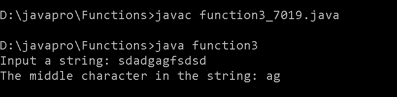

FUNCTION
1. Write a Java method to find the smallest number among three numbers
Input
/* Write a java method to find the smallest number amoung three numbers. */
class function1{
public static void main(String[] args) {
int num1 = 3;
int num2 = 17;
int num3 = 5;
int smallest = findSmallestNumber(num1, num2, num3);
System.out.println("The smallest number is: " + smallest);
}
public static int findSmallestNumber(int num1, int num2, int num3) {
int smallest = num1;
if (num2 < smallest) {
smallest = num2;
}
if (num3 < smallest) {
smallest = num3;
}
return smallest;
}
}
Output

2. Write a Java method to compute the average of three numbers.
Input
class AverageCalculator {
static double computeAverage(double num1, double num2, double num3) {
return (num1 + num2 + num3) / 3.0;
}
public static void main(String[] args) {
double number1 = 10.0;
double number2 = 5.0;
double number3 = 8.0;
double average = computeAverage(number1, number2, number3);
System.out.println("The average is: " + average);
}
}
output

3. Write a Java method to display the middle character of a string. Note: a) If the length of the string is odd there will be two middle characters. b) If the length of the string is even there will be one middle character.
Input
import java.util.Scanner;
//Write a Java method to display the middle character of a string. Note:
//aIf the length of the string is odd there will be two middle characters. b)
//If the length of the string is even there will be one middle character.
class function3 {
public static void main(String[] args)
{
Scanner in = new Scanner(System.in);
System.out.print("Input a string: ");
String str = in.nextLine();
System.out.print("The middle character in the string: " + middle(str)+"\n");
}
public static String middle(String str)
{
int position;
int length;
if (str.length() % 2 == 0)
{
position = str.length() / 2 - 1;
length = 2;
}
else
{
position = str.length() / 2;
length = 1;
}
return str.substring(position, position + length);
}
}
output

5. Write a Java method to compute the future investment value at a given interest rate for a specified number of years.
Input
import java.util.Scanner;
class FutureInvestment {
public static void main(String[] args) {
Scanner in = new Scanner(System.in);
System.out.print("Input the investment amount: ");
double investment = in.nextDouble();
System.out.print("Input the rate of interest: ");
double rate = in.nextDouble();
System.out.print("Input number of years: ");
int year = in.nextInt();
rate *= 0.01;
System.out.println("Years FutureValue");
for(int i = 1; i <= year; i++) {
int formatter = 19;
if (i >= 10) formatter = 18;
System.out.printf(i + "%"+formatter+".2f\n", futureInvestmentValue(investment, rate/12, i));
}
}
public static double futureInvestmentValue(double investmentAmount, double monthlyInterestRate, int years) {
return investmentAmount * Math.pow(1 + monthlyInterestRate, years * 12);
}
}
Output

6. Write a Java method to print characters between two characters (i.e. A to P).
Input
class CharacterPrinter {
static void printCharactersBetween(char startChar, char endChar) {
if (startChar > endChar) {
char temp = startChar;
startChar = endChar;
endChar = temp;
}
for (char ch = startChar; ch < endChar; ch++) {
System.out.print(ch + " ");
}
System.out.println(endChar);
}
public static void main(String[] args) {
char startChar = 'A';
char endChar = 'F';
System.out.println("Characters between " + startChar + " and " + endChar + ":");
printCharactersBetween(startChar, endChar);
}
}
output

9. Write a Java method to find all twin prime numbers less than 100.
Input
class Function9 {
public static void main(String[] args) {
findTwinPrimes(100);
}
private static boolean isPrime(int num) {
if (num < 2) {
return false;
}
for (int i = 2; i <= Math.sqrt(num); i++) {
if (num % i == 0) {
return false;
}
}
return true;
}
private static void findTwinPrimes(int limit) {
System.out.println("Twin Prime Numbers less than " + limit + ":");
for (int i = 3; i < limit; i++) {
if (isPrime(i) && isPrime(i + 2)) {
System.out.println("(" + i + ", " + (i + 2) + ")");
}
}
}
}
output
Twin Prime Numbers less than 100:
(3, 5)
(5, 7)
(11, 13)
(17, 19)
(29, 31)
(41, 43)
(59, 61)
(71, 73)
13. Write a Java method that checks whether all the characters in a given string are vowels (a, e,i,o,u) or not. Return true if each character in the string is a vowel, otherwise return false.
Input
/*
*
* Write a Java method that checks whether all the characters in a given string are vowels (a, e,i,o,u) or not. Return true if each character in the string is a vowel, otherwise return false.
*/
class Test
{
static boolean isVowel(char c)
{
if (c == 'a')
{
return true;
}
else if (c == 'a')
{
return true;
}
else if (c == 'u')
{
return true;
}
else if (c == 'e')
{
return true;
}
else if (c == 'i')
{
return true;
}
else if (c == 'o')
{
return true;
}
else
{
return false;
}
}
static boolean isStringInsideVowel(String line)
{
for (int i = 0; i < line.length(); i++)
{
if(isVowel(line.charAt(i)))
{
return true;
}
}
return false;
}
public static void main(String args[])
{
System.out.println(Test.isStringInsideVowel("hello"));
System.out.println(Test.isStringInsideVowel("kmnpdk"));
}
}
output
true
false